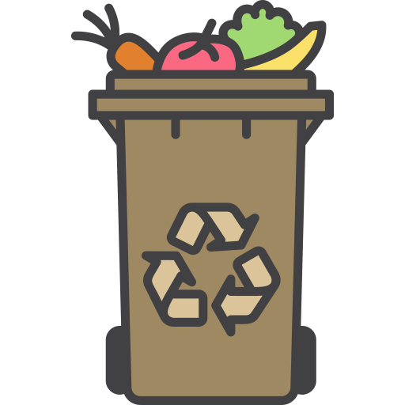

Guia para o descarte Orgânico.
-

O descarte incorreto de resíduos orgânicos em lixões e aterros sanitários gera o chorume, um líquido tóxico que contamina o solo e a água, e o gás metano (CH₄), um dos principais gases de efeito estufa, que contribui para o aquecimento global. A compostagem transforma os resíduos orgânicos em adubo natural, conhecido como composto, que pode ser utilizado em hortas e jardins. Isso reduz a quantidade de lixo em aterros sanitários e diminui a necessidade de fertilizantes químicos.
O que são resíduos orgânicos?
São materiais de origem biológica que se decompõem naturalmente. Eles podem ser compostados para virar adubo.
Exemplos de resíduos orgânicos:
- Restos de alimentos
- Casca de frutas e legumes
- Borra de café
- Folhas secas e restos de poda
Evite misturar com:
- Plásticos
- Vidros
- Resíduos tóxicos